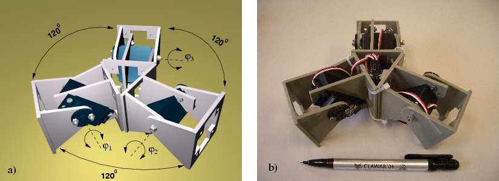
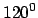
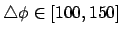
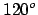
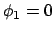
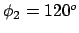
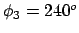

Next: 6 Conclusion and further Up: multicube-clawar Previous: 4 Lateral Rolling


Next: 6
Conclusion and further Up: multicube-clawar
Previous: 4 Lateral
Rolling
|
 |
Figure: The three-modules star configuration.
The last configuration tested was a three-modules star, shown
in Figure .
The modules form a star of three points with an angular distance of
.
The modules form a star of three points with an angular distance of

.It can move on a 2D surface, in three directions, as well as performing rotations in the yaw axis. If two adjacent modules are in phase and the opposite has

, it moves on a straight in the direction of the module out of phase. However, this movement is very surface-dependant.When the increment of phase between the three modules is

, for example,
,
and
, the robot performs a slow rotation in the yaw axis.